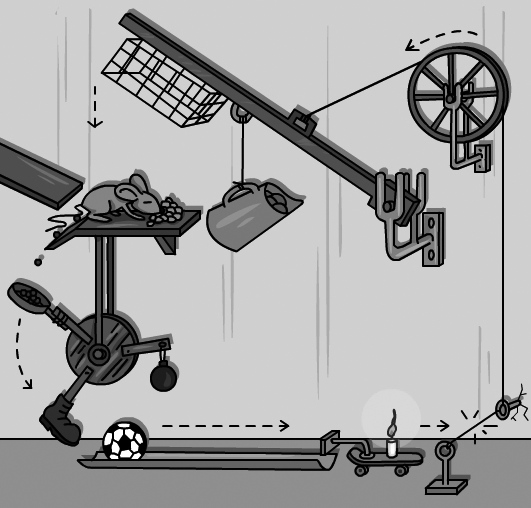
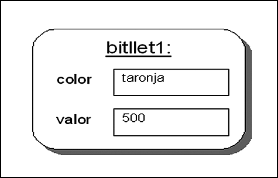

Fonaments de la programació orientada a objectes
Ens trobem en el punt de partida per veure com s’ha d’enfocar qualsevol problema, si bé amb un èmfasi especial en el desenvolupament d’aplicacions, des de la perspectiva de l’orientació a objectes. Se sol dir que per entendre com funciona l’orientació a objectes és necessari fer un “canvi de xip”, ja que representa un salt cap a un nivell d’abstracció superior. La millor manera d’assolir aquest canvi és entenent els motius pels quals va sorgir i les estratègies bàsiques a seguir per aplicar de manera senzilla l’orientació a objectes. Un cop introduïts aquests motius i estratègies, ja és possible començar a pensar com és el món vist des d’aquesta perspectiva.
Un món orientat a objectes
A mesura que els sistemes s’han fet més complexos, ha estat necessari crear nous mecanismes que permetin usar un nivell cada cop més alt d’abstracció en el procés de desenvolupament del programari. Amb aquesta abstracció, el que s’intenta és, per una banda, dissenyar i desenvolupar programes sense haver d’estar lligats al maquinari o el sistema operatiu final de la màquina i, per l’altra, que siguin fàcils de mantenir i entendre per qualsevol desenvolupador. Aquest fet és imprescindible a mesura que programar s’ha convertit en un treball en equip. Una manera d’assolir-ho és que la tasca de programar sigui cada cop més propera al procés del pensament i del llenguatge humà.
Per començar des del cas més extrem, a l’hora de crear un programa es pot pensar en el codi màquina, les cadenes de 0 i 1 que s’executen directament dins del maquinari. Cada cadena codifica una operació molt simple, estretament vinculada al maquinari: gestionar memòria, fer una operació matemàtica bàsica en una unitat aritmètica, etc. Evidentment, avui en dia, a pràcticament ningú no se li acudiria fer un programa directament d’aquesta manera.
Immediatament, un pas abans, trobem el llenguatge assemblador, si bé aquest no deixa de ser un conjunt de mnemotècnics que reemplacen els 0 i els 1 del codi màquina amb sentències més intel·ligibles per als humans. Tot i que l’assemblador encara s’utilitza, i és molt important en alguns entorns, ja es pot veure que només un expert podria fer un programa de certa complexitat (per exemple, un navegador web) íntegrament amb aquest llenguatge. En tot cas, fer-lo implicaria invertir molt de temps i resultaria en una dificultat enorme per depurar-lo, ampliar-lo en el futur o perquè algú altre el pogués entendre.
Fent un salt una mica més llarg en el procés d’abstracció, i ja entrant dins del dia a dia d’un programador actual, trobem els llenguatges estructurats i la programació modular. És el cas, per exemple, dels llenguatges C, Pascal o Basic, juntament amb les seves biblioteques, on hi ha sentències que ens permeten fer des d’operacions matemàtiques simples fins a imprimir directament cadenes de text per pantalla. Ja no cal conèixer tots els detalls del maquinari i és possible fer tasques complexes de manera senzilla. Tot i així, un programador que utilitzi aquestes eines encara ha de conèixer alguns aspectes lligats a la màquina o el sistema operatiu: com funciona la memòria d’un ordinador, per definir estructures de dades, o els mecanismes d’entrada i sortida, per accedir als fitxers, el teclat o la pantalla.
En aquests materials s’arriba fins al salt immediat següent: l’orientació a objectes. És aquí on es comença a fer una veritable aproximació entre la manera com un ésser humà pot estructurar un problema i com codificarlo en forma de programa, de manera que ambdós processos siguin, conceptualment, tan semblants com sigui possible. Un aspecte molt important en què cal fer èmfasi, ja des del començament, és que l’orientació a objectes com a tal és una metodologia, o estratègia, amb vista al desenvolupament del programari. No es tracta simplement d’una família de llenguatges de programació. Els anomenats llenguatges de programació orientats a objectes són els que suporten aquesta metodologia i ens permeten plasmar el disseny generat en forma de programa.
L’orientació a objectes no és un tipus de llenguatge de programació. És una metodologia de treball per crear programes.
Un dels aspectes més importants de l’orientació a objectes és l’anàlisi dels problemes que volem resoldre mitjançant aplicacions informàtiques de la mateixa manera que per als problemes que hi ha al món real. La conseqüència directa d’aquest fet és la possibilitat d’aplicar mecanismes formals d’enginyeria al programari sense la necessitat d’implementar primer la solució. Això, d’una banda, permet treballar de la mateixa manera que altres disciplines afins a l’enginyeria ho fan dins el seu àmbit (mecànica, electrònica, arquitectura, etc.). D’altra banda, permet dissenyar l’aplicació de manera totalment independent del llenguatge de programació que s’utilitzarà. De fet, el dissenyador ni tan sols no ha de saber programar necessàriament (tot i que saber-ne ajuda, és clar).
Gènesi i evolució de l'orientació a objectes
En els primers passos de l’aprenentatge d’una matèria és habitual donar una visió històrica de la seva evolució al llarg dels anys. Si bé normalment aquest fet és justificat per l’obtenció d’un cert grau de cultura general, en aquest cas, aquesta visió aporta una bona perspectiva del motiu que va dur a l’aparició de la metodologia de l’orientació a objectes, quins objectius persegueix i com enfoca el procés de desenvolupament d’una aplicació. Per fer-ho, però, n’hi ha prou de centrar-se només en els llenguatges més significatius, no cal una revisió exhaustiva. Aquest repàs històric també servirà per introduir ja, però encara sense aprofundir-hi gaire, alguns dels conceptes clau de l’orientació a objectes.
Els inicis de l’orientació a objectes es remunten a l’any 1960, amb Ole-Johan Dahl i Kristen Nygaard, que treballaven en el Centre de Computació de Noruega en la creació de simulacions de maquinària complexa. Un dels problemes més grans en la seva tasca era la traducció de l’esquema de la maquinària al llenguatge informàtic, ja que implicava un salt conceptual molt gran amb les eines existents: per modelar la màquina calia ser un expert en mecànica, electricitat, etc., mentre que per generar un programa calia ser expert en ordinadors.
Per tal de minimitzar aquest salt, van decidir utilitzar una nova estratègia: dividir els programes en mòduls independents, cadascun dels quals representaria, únicament i exclusivament, un símil exacte de cadascun dels tipus de peça de la maquinària a simular. En cada mòdul s’especificaria quines eren les seves propietats generals (per exemple, l’amplada, el pes, etc.) i el seu comportament (per exemple, pot ser pitjada, genera un cert corrent elèctric, etc.). Aquests mòduls actuarien com un motlle en el món real, i a partir d’ells es generarien els elements, les peces, que formarien realment el programa en execució. L’execució del programa, pròpiament, vindria donada per la interacció entre els diferents elements, de la mateixa manera que les peces que componen una màquina en el món real ho farien per fer-la funcionar en la seva totalitat.
Aquesta estratègia tenia un avantatge addicional: un cop desenvolupat un mòdul que definia un tipus de peça concret, aquest es podia tornar a aprofitar per simular qualsevol altra màquina que fes ús del mateix tipus de pe- ça, fet que era molt habitual.
- 
- En un programa orientat a objectes, els elements interactuen per resoldre una tasca.
Per aplicar aquesta filosofia a l’hora de generar un programa van necessitar desenvolupar un nou llenguatge que acomodés totes aquestes propietats. Així van néixer els primers llenguatges orientats a objectes: el Simula I(1962- 1965) i el Simula 67(1967). En aquests llenguatges ja es va establir part de la nomenclatura més important de l’orientació a objectes. Els mòduls que defineixen els tipus de peça s’anomenarien classes, i per referir-se a les peces concretes que s’executarien dins un programa s’empraria el terme objectes.
Un programa s’entén com una simulació d’un escenari del món real, en què un conjunt d’elements, els objectes, interactuen entre ells per dur a terme la tasca que es vol resoldre.
Tot i que els llenguatges Simula es poden considerar els originadors del concepte de programació orientada a objectes, va ser l’empresa Xerox, amb el seu llenguatge SmallTalk, la que va començar a utilitzar aquest nom al principi de la dècada de 1970. Alan Kay, de la Universitat de Utah, va conèixer l’obra de Dahl i Nygaard i va aplicar aquesta nova visió per afrontar un problema de programació molt concret: la creació d’un ordinador personal especialment dissenyat per suportar aplicacions gràfiques. En aquest cas, va considerar que una interfície d’usuari també es podia interpretar com un conjunt d’elements comuns o peces amb unes propietats clarament definides (botons, finestres, menús, etc.) que porten a terme una tasca en interaccionar entre ells o amb l’usuari. Kay va vendre la seva idea a Xerox, que va desenvolupar el llenguatge SmallTalk per crear aquest ordinador totalment gràfic, batejat com a Dynabook.
El llenguatge SmallTalk va aportar millores noves molt importants a la idea inicial. Per una banda, permetia la possibilitat que els objectes tinguessin un comportament dinàmic: ser creats, destruïts o que les seves propietats poguessin canviar al llarg de l’execució del programa. Aquesta evolució es pot considerar lògica en un salt des de la simulació d’una màquina, en què les peces sempre són les mateixes, a una interfície gràfica, en què els elements són totalment dinàmics: les finestres s’obren i tanquen o canvien de mida, els botons s’habiliten, inhabiliten o canvien les icones que els representen, etc. Va ser justament aquesta evolució la que va catapultar l’orientació a objectes com a metodologia ideal per desenvolupar interfícies gràfiques.
Una altra aportació molt important, i que actualment es considera bàsica en qualsevol llenguatge orientat a objectes, va ser la introducció del concepte d’herència: poder definir diferents tipus d’objecte, diferents classes, només especificant les diferències que hi ha entre ells.
La popularitat del C++ s’ha mantingut fins avui en dia i encara és molt utilitzat.
Arribats a aquest punt, en què es poden considerar establertes les bases de l’orientació a objectes, aquesta metodologia va començar a guanyar impuls. Aquest impuls es va veure especialment reflectit a partir de la dècada de 1980, quan un seguit de llenguatges no orientats a objectes molt populars com BASIC, Pascal o Fortran, o bé van començar a incorporar aspectes de l’orientació a objectes, o bé, a partir d’ells, es va generar una versió orientada a objectes. El màxim exponent de l’època, tant per la popularitat com per la complexitat a l’hora de fer programes, va ser el llenguatge C++, creat a partir del llenguatge C per Bjorn Stroustrup. Entre les noves aportacions de C++ als llenguatges orientats a objectes es pot comptar l’herència múltiple , la capacitat d’un objecte per aplicar herència a partir de més d’una classe.
Compile once, Run everywhere
Malauradament, alguns dels programadors més experts d’aplicacions solen canviar la frase a “compile once, debug everywhere” (compila un cop, depura el codi a tot arreu).
En els anys 1990 l’orientació a objectes va arribar al seu moment de màxima popularitat amb l’aparició d’un nou llenguatge molt inspirat en C/C++, però que intentava disminuir-ne la complexitat a l’hora de programar: elllenguatge Java. Desenvolupat per SUN Microsystems i publicat en la seva versió 1.0 l’any 1995, una de les innovacions més importants que aportava era l’execució sobre una màquina virtual: els programes, en lloc d’executar-se directament sobre un maquinari o sistema operatiu específic, s’executen sobre una programa especial que crea una capa d’abstracció. D’aquesta manera, un programa generat per Java es pot executar sobre qualsevol plataforma, fet que en maximitza la portabilitat, però a costa d’una eficiència menor. Un dels seus eslògans va ser la frase “compile once, run everywhere” (compila un cop, executa a tot arreu).
Java 7
L’any 2012, la darrera versió publicada de Java és la 7, actualització 5, amb la particularitat que es tracta principalment de programari lliure en la seva major part.
Aquesta possibilitat va permetre enfocar el llenguatge Java a la programació d’aplicacions a Internet, en què hom es troba en un entorn de sistemes heterogenis. La incorporació de la màquina virtual de Java a tots els navegadors més populars i la possibilitat d’executar programes en Java des d’aquests (els anomenats applets), lligada a l’explosió d’Internet, van ser uns dels factors principals de la seva popularitat.
Els motius de la popularitat de Java, tan lligats a la idea d’una màquina virtual i un llenguatge enfocat a desenvolupar aplicacions a Internet, no van passar gens desapercebuts dins el mercat i, l’any 2002, l’empresa Microsoft va contraatacar publicant la versió 1.0 de l’entorn .NET, amb la seva pròpia proposta de màquina virtual. Si bé l’especificació de la plataforma es va desenvolupar de manera genèrica, la implementació publicada es va lligar exclusivament a PC amb sistemes operatius Windows. Entre els llenguatges per desenvolupar en aquest entorn hi ha el C# (C Sharp), creat exclusivament per al seu ús en aquest entorn. Queda obert per al debat fins a quin punt el C# es pot considerar més fortament inspirat en Java que no pas el seu llenguatge pare, el C++. Aquest es pot considerar un dels darrers llenguatges orientats a objectes que s’han creat i que encara és de certa rellevància.
Com diu la frase: “No hi ha elogi més gran que la imitació”.
Bases de l'orientació a objectes
Durant el procés de creació del llenguatge SmallTalk, Alan Kay va definir les que es consideren les bases de l’orientació a objectes, les quals serveixen per establir com s’estructura la resolució d’un problema mitjançant l’orientació a objectes i de quina manera interactuen els diferents components per assolir una tasca concreta. Aquestes bases, compartides pels diferents llenguatges orientats a objectes, són les següents:
- Tot és un objecte, amb una identitat pròpia.
- Un programa és un conjunt d’objectes que interactuen entre ells.
- Un objecte pot estar format per altres objectes més simples.
- Cada objecte pertany a un tipus concret: una classe.
- Objectes del mateix tipus tenen un comportament idèntic.
La descripció més detallada del significat de cadascuna d’aquestes bases servirà com a fil argumental per explicar amb més claredat en què consisteix la metodologia de l’orientació a objectes. Amb vista a fer més entenedores les explicacions, en totes s’usa un exemple comú basat en un escenari en què sigui fàcil identificar els elements que el componen, però que a la vegada tingui sentit plasmar-lo en forma d’una aplicació informàtica: el joc del Monopoly.
El joc del Monopoly: descripció
En el joc del Monopoly, els jugadors gestionen béns i immobles amb l’objectiu final d’arruïnar la resta d’adversaris. Cada jugador disposa d’uns diners inicials, en forma de bitllets, i és representat per una fitxa al tauler. Aquesta fitxa avança d’acord amb el resultat de la tirada de dos daus, per caselles amb noms de carrers i d’un color concret, que representen propietats. Cada cop que es cau en una casella, el jugador pot optar per comprar-la pagant el preu que marca la casella. En fer-ho, rep un títol de propietat. Quan un jugador cau en una casella que és propietat d’un altre jugador, ha de pagar al jugador propietari la quantitat de diners especificada en el títol de propietat. Dins aquesta dinàmica, hi ha un jugador especial anomenat banca que exerceix d’àrbitre del joc (no té fitxa) i gestiona els bitllets i les propietats que encara no pertanyen a cap jugador.
Quan un jugador és el propietari de totes les caselles d’un mateix color al tauler, cada cop que hi cau té l’opció d’edificar fins a quatre cases. Quan ha construït quatre cases, pot edificar-hi un hotel. Per fer-ho, ha de pagar una certa quantitat de diners, però a partir de llavors, el preu que han de pagar els adversaris que caiguin en aquesta casella també és més alt. Les edificacions es representen amb peces que se situen sobre la casella.
Si bé aquesta és la descripció bàsica, cal dir que en realitat el joc és més complex, ja que al llarg del joc també hi ha un seguit de circumstàncies especials: robar cartes que donen premis o càstigs, una casella de presó en què la fitxa queda atrapada fins a treure doble número, etc. De totes maneres, per seguir l’exemple no és necessari conèixer tots aquests detalls, és suficient amb el que s’ha explicat.
Els jocs de taula són una bona elecció per practicar com es pot aplicar l’orientació a objectes.
És molt important remarcar que l’explicació es mantindrà en els aspectes conceptuals: quina és l’estratègia que usa l’orientació a objectes per estructurar un problema.
1) Tot és un objecte, amb una identitat pròpia. Aplicar l’orientació a objectes a un programa és equivalent a intentar crear la simulació d’un escenari que podríem tenir en el món real, però dins de l’ordinador. Aquesta simulació s’estructura en un conjunt d’elements, cadascun del quals té unes propietats i un comportament concret que intenten imitar les de l’element del món real que representen. Aquests elements dins la simulació s’anomenen objectes. Així, doncs, en el programa en execució, tot element serà sempre un objecte.
Quan parlem de les propietats d’un objecte ens referim a les qualitats que es considera important quantificar i que defineixen l’aspecte o l’estat de l’objecte. Així, doncs, donat un botó, podem decidir definir quin és el seu color, la seva mida, etc.
Les propietats d’un objecte s’anomenen formalment els seus atributs.
- 
- Per ara, els atributs dins un objectes els expressarem amb aquesta representació.
Un altre fet important és que cada objecte dins un programa és únic, tot i que n’hi pot haver més d’un amb propietats idèntiques, i clarament identificable dins aquesta simulació, de la mateixa manera que dues peces dins una màquina (per exemple, dos botons) poden ser idèntiques, però són clarament dos elements diferenciats situats en ubicacions físiques diferents i amb funcions diferents.
El joc del Monopoly: descomposició en objectes
Dins del joc del Monopoly, cada objecte correspondria a un element que podem veure al llarg d’una partida: el tauler, els daus, cada jugador, les fitxes que es mouen pel tauler, els títols de propietat, les targetes, les cases i els hotels, els bitllets, etc. Alguns d’aquests objectes són individuals (només hi ha un tauler) i d’altres n’hi ha diversos, amb atributs idèntics (els diversos bitllets de cent són tots iguals) o diferents (cada títol de propietat, que correspon a un carrer i té un valor diferent).
En la figura es pot veure part d’una possible descomposició del joc del Monopoly en alguns dels objectes que el componen.
En la translació representada en la figura, des del món real a un conjunt d’objectes, cal remarcar dues coses. Per una banda, cada element individual és representat per un objecte. Així, doncs, si tenim tretze fitxes d’hotel, també hi haurà tretze objectes hotel. Això està expressat per les diferents representacions tipus objecte1:, …, objecteN: (per exemple, fitxa1:, …, fitxaN: en la figura). Per altra banda, entre els objectes hi haurà qualsevol element que formi part i interactuï dins d’una partida del joc. Per tant, tot i que no apareix a la imatge, també cal tenir en compte elements com els jugadors o la banca.
Normalment, és l’usuari qui inicia cada cadena d’interaccions que du a la realització d’una tasca.
2) Un programa és un conjunt d’objectes que interactuen. De la mateixa manera que les màquines de Dahl i Nygaard es posaven en funcionament mitjançant la interacció de les diferents peces que les formaven, l’execució d’un programa vindrà donada pel conjunt d’interaccions entre els diferents objectes que el componen. Per exemple, podem interactuar amb un botó pitjant-lo. Aquest, a la vegada, interactuarà amb altres objectes (en el món real, potser amb una molla o enviant un senyal elèctric) per transmetre que cal executar una ordre donada.
El que defineix el comportament de cada objecte és una llista amb el conjunt de les interaccions que pot rebre, cada una sempre d’acord amb una tasca que pot fer o un canvi d’estat (una bombeta es pot apagar i encendre, un botó pot ser pitjat, una finestra tancada, etc.).
Cada interacció que pot rebre un objecte s’anomena operació.
Quan un objecte A vol interactuar amb un objecte B, diem que A crida una operació de B. Quina operació es crida depèn del tipus d’interacció que vol desencadenar A. Així, doncs, un programa en execució es compon d’un conjunt d’objectes que criden operacions entre ells.
El joc del Monopoly
Al llarg d’una partida del Monopoly hi ha un conjunt d’interaccions possibles entre els objectes, d’acord amb les regles del joc. Així, doncs, entre moltes altres coses, un jugador pot fer les interaccions amb altres objectes del joc descrites en la taula. Cada interacció equival a cridar una operació sobre l’objecte que la rep.
| Interacció sobre un altre objecte | crida d’operació… |
|---|---|
| Pagar un deute a un altre jugador | …pagar sobre un altre objecte jugador |
| Tirar els daus | …tirar sobre els dos objectes dau |
| Comprar propietat a la banca | …comprar sobre l’objecte banca |
També és possible que no sigui un altre objecte, sinó l’usuari de l’aplicació, qui cridi una operació sobre un objecte. Aquest aspecte cal tenir-lo en compte quan es defineixen les operacions que pot rebre un objecte.
3) Un objecte es pot compondre d’altres objectes més simples. Quan es vol resoldre un problema, la manera més senzilla de tractar amb la complexitat és mitjançant la descomposició en problemes més simples. Per exemple, el motor d’un cotxe es descompon en elements més senzills i molt més fàcils d’analitzar, els quals, a la vegada, es poden descompondre en un altre conjunt d’elements encara més simples. Intentar copsar el funcionament d’un motor de cotxe sense aquesta descomposició sol ser molt més complicat.
Aquesta tècnica també es pot usar dins l’orientació a objectes, de manera que es poden crear objectes que en realitat es componen d’altres de més simples. L’objectiu és el mateix, és a dir, poder generar elements complexos a partir d’altres de més simples. Però també hi ha una altra motivació: la possibilitat d’interactuar directament tant amb l’objecte complex com amb qualsevol dels seus subelements.
El joc del Monopoly: objectes compostos
Al Monopoly, un objecte fàcilment identificable és el tauler. Tot i així, també es pot considerar que aquest en realitat està format per la unió d’altres subelements més senzills: les caselles. De fet, com es pot veure en la figura, en aquest escenari resulta especialment útil mirar les caselles com a objectes, ja que cada una té uns atributs que ens interessa diferenciar (color, preu, etc.).
4) Cada objecte pertany a un tipus concret: una classe. A mesura que es defineixen els diferents objectes que componen el programa en execució, sovint es troba que hi ha objectes que es poden considerar del mateix tipus: tenen exactament les mateixes propietats, tot i que el valor de cada una pot ser diferent per a cada objecte concret, i el mateix comportament. Llavors es diu que aquests objectes pertanyen a la mateixa classe.
Una classe és l’especificació formal de les propietats (els atributs) i el comportament esperat (la llista d’operacions) d’un conjunt d’objectes del mateix tipus, i que actua com una plantilla per generar cadascun d’ells.
Alguns objectes del programa compartiran la mateixa plantilla i d’altres en tindran una només per a ells. Pel que fa a la nomenclatura formal, es diu que un objecte és una instància d’una classe i que un objecte és instanciat quan es crea dins l’aplicació. És tot just en aquest moment quan s’usa la classe per generar l’objecte, tot determinant quin és el seu conjunt d’atributs i assignant un valor concret per a cada un. A efectes pràctics, quant a nomenclatura, es pot considerar que instància i objecte són termes equivalents.
Un cop instanciat un objecte, aquest sempre pertany a la mateixa classe. No es pot canviar el seu tipus dinàmicament.
Els objectes només existeixen mentre l’aplicació està en marxa.
Fins ara sempre ens havíem referit als objectes com a elements que componen un programa en execució (èmfasi en la paraula “execució”). Però, donat un programa desenvolupat mitjançant l’orientació a objectes, allò que el programador realment generarà, el codi font, serà, per una banda, les classes de cada objecte necessari dins el seu programa i, per l’altra, el codi que instancia i organitza tots els objectes.
Nomenclatura
Normalment, quan parlem d’objectes o instàncies, s’escriu amb la lletra inicial en minúscula. Quan parlem de classes ho fem amb la inicial en majúscula.
El joc del Monopoly: classes d'objectes
Fins ara s’han identificat els objectes que es diferencien clarament en una partida de Monopoly. Tot i així, ja es pot veure que hi ha objectes que comparteixen unes propietats i un comportament, encara que el seu valor concret sigui diferent en cada cas. Per exemple, tots els jugadors són el mateix tipus d’objecte (són el mateix, tot i que puguin tenir un valor diferent per a l’atribut nom). De la mateixa manera, podem detectar aquesta relació en els bitllets, els títols de propietat o les caselles del tauler, entre d’altres.
La conclusió d’aquest fet és que, en el codi font del programa, el desenvolupador ha de generar una classe per a cadascun d’aquests tipus d’objectes: la classe Jugador, la classe Bitllet, la classe Títol, la classe Casella, etc. Només hi haurà una classe per a cada tipus d’objecte, i dintre seu es definirà quins són els atributs i quines són les operacions que es poden cridar sobre els objectes d’aquest tipus.
Així, doncs, podem tenir quatre jugadors en una partida (en executar el programa), però el desenvolupador només haurà definit una única classe Jugador. En començar la partida, el codi del programa s’encarregarà d’instanciar quatre objectes jugador, a partir de la classe Jugador, cadascun amb els seus valors concrets per als seus atributs (un nom diferent per a cadascun). De la mateixa manera, a partir d’una única classe Bitllet generem tots els objectes bitllet que hi ha quan el programa està en execució, com es pot veure en la figura. Val la pena remarcar novament el fet que podem tenir objectes amb valors idèntics per als seus atributs (bitllet1: i bitllet2:), però tot i així, continuen essent entitats diferenciades.
Sempre que calgui referir-se a una classe en un text o esquema, s’usarà el seu nom. En contrast, quan vulguem referir-nos a una instància d’aquesta classe, un objecte, usarem la nomenclatura:
nomObjecte:NomClasse
Nom compost
Si s’usa un nom compost, s’utilitza majúscula en cada inicial de paraula, si bé, se sol evitar usar articles o preposicions en el nom. Per exemple, TítolPropietat.
Per exemple: bitllet1:Bitllet, jugador4:Jugador, etc. Tot i així, si no es vol concretar la classe, perquè ja és evident pel context, no cal. Quant a la nomenclatura, en el cas dels objectes, la primera inicial sempre sol ser en minúscula. En canvi, per a les classes sempre se sol usar majúscula. Això ens permet diferenciar fàcilment quan s’està fent referència a una classe o a un objecte concret.
Si no es vol donar un identificador específic a un objecte en referir-nos-hi, es pot usar simplement la nomenclatura següent per referir-se a un objecte qualsevol d’una classe determinada:
:NomClasse
Atès qualsevol esquema o descripció, cada identificador d’objecte és únic (tot és un objecte, amb identitat pròpia). Si usem el mateix identificador diverses vegades, en cada una es considerarà que ens referim exactament al mateix objecte.
5) Els objectes del mateix tipus tenen un comportament idèntic. Finalment, arribem a la darrera base de l’orientació a objectes, tot i que aquesta es pot considerar una extensió de l’anterior. De la mateixa manera que una classe defineix els atributs d’objectes del mateix tipus, també n’especifica el comportament: la seva llista d’operacions. Per tant, el conjunt d’interaccions possibles amb objectes de la mateixa classe sempre és el mateix. Per cada interacció que un objecte de la classe A pot rebre (sense que importi el possible objecte origen), caldrà definir una operació associada a aquesta en especificar la classe A.
Una operació és una funció o transformació que es pot aplicar a tots els objectes d’una classe.
Resolució de problemes usant orientació a objectes
L’orientació a objectes aporta una nova perspectiva a la visualització i la resolució de problemes. Per aplicar-la correctament és necessari seguir alguns passos per tal de plantejar el problema i anar fent la descomposició de l’escenari. Per seguir aquests passos, val la pena tenir una idea de què compon realment un objecte i una classe, com es poden especificar classes i quins aspectes cal tenir en compte a l’hora de fer-ho. Un programa orientat a objectes es composarà, al igual que una màquina, de la unió de cadascuna de les seves peces (les classes), que interactuant, faran que el tot funcioni. Una eina útil per visualitzar com, al final del procés, tot un conjunt de classes interactuen per tal de formar una aplicació són els mapes d’objectes.
Esquema general d'aplicació de l'orientació a objectes
Reaprofitament
Dins l’orientació a objectes és molt útil que les classes definides per a un programa concret també puguin ser usades per altres programes que es puguin fer en el futur.
Un cop s’han establert les bases de l’orientació a objectes, és possible aproximar-nos de manera general a la resolució d’un problema mitjançant aquesta metodologia. Seguint un conjunt de passos ordenats, és possible establir de quina manera cal organitzar els seus components i els seus mecanismes de col·laboració. Aquests passos són els següents:
- Plantejar l’escenari descriptivament, amb llenguatge humà. Com més detallada sigui la descripció, més fàcil serà la feina.
- Localitzar, dins la descripció de l’escenari, els elements que es consideren més importants: els que realment interactuen amb vista a resoldre el problema. Aquests seran els objectes del programa. Normalment, solen ser substantius dins la descripció.
- Considerar quins elements són d’una certa complexitat. Redefinir-los com a agrupacions d’objectes més simples. Una bona estratègia és partir del fet que tot l’escenari en si és un objecte complex (igual que una màquina també és un objecte complex) i anar-lo descomponent en parts més petites.
- Agrupar els diferents objectes segons el tipus: quins objectes veiem que tenen propietats o comportaments idèntics. Cada tipus d’objecte serà una classe que caldrà especificar.
- Identificar i enumerar les característiques dels objectes de cada classe: quines són les seves propietats (els atributs) i el seu comportament (les operacions que ofereixen). N’hi ha prou amb una llista general, escrita en llenguatge humà però suficientment entenedora.
- Establir les relacions que hi ha entre els objectes de les diferents classes a partir del paper que interpreten en el problema general. Els objectes no es generen en un buit, sinó que estan relacionats entre si, de la mateixa manera que les peces d’una màquina o els elements d’un edifici no floten en l’aire, sinó que estan connectat per formar un tot. De la mateixa manera, un cop identificats els objectes que conformen el problema a resoldre (el programa que es vol fer en aquest cas), cal identificar com es relacionen entre ells. Normalment, aquesta mena d’enllaços es poden identificar com “aquest objecte en conté d’aquests altres” o “aquest objecte en gestiona aquests altres”. A mode d’ajut, es pot generar un mapa d’objectes.
- Per cada classe, especificar formalment els seus atributs i operacions, extrets a partir de la llista de propietats dels seus objectes dels punts 5 i 6. Normalment, especificar-ne els atributs és un procés més immediat que l’especificació de les operacions.
Per resoldre un problema complex, dividiu i vencereu.
Per a un problema de certa complexitat, és molt difícil identificar a la primera totes les classes, atributs i operacions. Normalment, caldrà fer diverses iteracions. Usar una aproximació incremental per a tot el procés no és una mala idea, ja que per a problemes complexos és impossible copsar tots els detalls a la vegada. De fet, moltes vegades no serà possible adonar-se que calen certes coses fins al moment de la implementació. Això no invalida la idea que, abans de començar a implementar el programa, hi ha d’haver una fase prèvia de descomposició del problema i de definició formal dels components a desenvolupar.
El codi font d’un programa fet amb un llenguatge orientat a objectes es compon principalment de les classes definides.
Un cop definida la descomposició del problema, i arribada l’hora de la implementació, una part important del nostre programa és el conjunt de classes que haurem especificat al pas 7. L’altra part és l’encarregada de posar tot el procés en marxa: crear els diferents objectes en la memòria de l’ordinador, estructurar-los seguint com a model els mapes d’objectes de l’apartat 6 i iniciar la cadena d’interaccions entre ells que conformarà el programa en execució.
Un aspecte de vital importància en aquest procés és que cal evitar pensar en qualsevol interfície d’usuari concreta. Si bé es pot assumir que hi ha mecanismes mitjançant els quals l’usuari podrà cridar les operacions de certs objectes o veure’n l’estat, per cap concepte cal establir quin és el mecanisme específic que s’usarà. El motiu principal per fer-ho és que, novament, la manera com es faran aquestes accions està molt vinculada al llenguatge de programació concret que s’ha utilitzat. En conseqüència, en obviar la interfície a l’hora d’especificar les classes, s’evita lligar el disseny a un llenguatge, de manera que es pot aprofitar per a diferents implementacions.
La descomposició inicial d’un problema mitjançant l’orientació a objectes no ha d’explicitar mai la interfície d’usuari a emprar. Només es defineix la lògica interna del sistema i com s’estructura la informació a processar. Això és el que s’anomena el model de l’aplicació.
Posteriorment, un cop descompost el problema i ja triat el llenguatge de programació i quins mecanismes s’usarà per interactuar amb l’aplicació, es pot fer un disseny específic a part per a la interfície d’usuari.
Exemples d'aproximacions orientades a objectes
La millor manera de donar una idea més aclaridora de com, partint del problema, es pot arribar als elements bàsics que accepten interaccions per resoldre’l és amb exemples específics que presentin la descomposició en objectes i classes. Com que només es vol donar una idea, el problema que es planteja en cada cas només es descriu de manera general, sense entrar a descriure en detall totes les funcionalitats. En tot cas, els problemes exposats no són merament didàctics, sinó que tenen sentit si es consideren com una aplicació informàtica a desenvolupar (si bé sense ser gaire complexos).
És possible que al seguir els exemples, en algun moment, us trobeu que alguna decisió presa vosaltres la faríeu diferent. Potser a partir de la descripció del problema vosaltres identifiqueu altres conceptes com possibles classes o atributs. O, senzillament, el text amb el que descriureu el problema és totalment diferent als que es proposa aquí. Doncs bé, precisament una particularitat que val la pena destacar sempre que apliquem l’orientació a objectes és la importància de tenir present que cada problema pot tenir diferents solucions, i totes poden ser totalment correctes. Tot depèn de la subdivisió en objectes que plantegi el dissenyador, segons la seva manera d’enfocar el problema proposat. Per tant, la solució exposada en aquest apartat és una de les moltes que hi pot haver. De totes maneres, sempre hi ha elements molt evidents que molt probablement seran comuns, o molt semblants, a la majoria de solucions.
A fi de comptes, si s’aplica aquest principi a altres disciplines, donats dos arquitectes als que se’ls demana fer un edifici amb certes característiques, quina és la probabilitat de que els dos facin exactament la mateixa proposta de projecte? Però segur que al menys fonaments, parets i finestres n’hi haurà en els dos casos.
1) Una agenda. El primer exemple és molt senzill, amb molts pocs elements i funcionalitats i amb un paral·lelisme clar amb el món real per facilitar-ne la comprensió. Es vol dissenyar una agenda que permeti consultar les dates d’un calendari per a un any concret i apuntar cites a unes hores concretes. En aquest cas, és possible fer un cert paral·lelisme amb el món real, ja que el concepte d’agenda hi existeix. Es pot pensar en l’agenda com un llibre en què es van passant pàgines endavant o endarrere, cadascuna de les quals correspon a un dia. En cada pàgina es poden escriure cites establertes per a unes hores d’inici i de finalització determinades. Aquesta descripció en llenguatge humà seria la que s’ha descrit en el pas 1 de l’esquema d’aplicació de l’orientació a objectes.
Pel que fa al disseny, per referir-se a un objecte s’usa el seu nom seguit de dos punts.
Una bona manera de descompondre un problema en objectes és partir de l’element més general i, a partir d’aquí, anar extraient els elements més senzills. Així, doncs, en aquest cas es pot partir d’un objecte agenda: i deduir els elements que el componen: les pàgines. Sobre aquesta base, els objectes poden ser els que es mostren en la figura.
Hi ha objectes per als quals només podem fitar-ne el nombre per a un instant concret del programa. El seu nombre pot anar variant.
Hi ha 365 objectes pàgina:, ja que s’ha decidit que l’agenda és per a un any (per a aquest exercici s’obviaran els anys de traspàs). Cal remarcar que el nombre d’objectes cita no es pot prefixar per endavant, ja que serà dinàmic i pot ser diferent per a cada instant de l’execució de l’aplicació. Així, en iniciar l’aplicació no n’hi haurà cap i a mesura que avanci se n’hi afegiran, és a dir, s’aniran instanciant objectes cita:.
Un cop identificats els objectes ja es poden establir les classes que compondran el programa. En aquest cas, és relativament fàcil veure que són tres: Agenda, Pàgina i Cita. Alguns atributs que es poden considerar per a aquestes classes són:
Agenda: any.Pàgina: dia, mes, si és dia festiu.Cita: hora inici, hora finalització, motiu.
Amb vista a fer una primera aproximació a les operacions de cada classe, cal tenir molt clar què es vol resoldre i, per tant, què es pot fer amb cada objecte de cada classe. Algunes interaccions lògiques en aquest problema i, per tant, operacions a definir, poden ser:
Agenda: passar pàgina endavant, passar pàgina endarrere.Pàgina: escriure cita, esborrar cita.Cita: escriure contingut.
La particularitat més importat d’aquest exemple, i el motiu pel qual val la pena haver-lo presentat, és que no hi ha interaccions directament entre objectes. Totes les interaccions seran donades per l’usuari.
2) Un reproductor multimèdia. En aquest exemple es presenta la descomposició d’un sistema de reproducció multimèdia (música, vídeos, etc.). La motivació pot ser crear una aplicació senzilla per a l’ordinador o generar el sistema de control d’un reproductor portàtil (un dispositiu físic). Aquest exemple és més complex que l’agenda i, per tant, es descriurà tot el procés amb molt més detall.
Dispositius digitals
Els dispositius digitals actuals estan controlats per processadors amb un programari encastat associat. Avui en dia tot és un petit ordinador.
L’objectiu principal d’aquest exemple és mostrar que, si bé és molt útil fer un símil amb el món real, mai no s’ha de perdre de vista que, en darrera instància, hi haurà un programa d’ordinador. Per tant, en aquest exemple ja es deixarà de banda fer un paral·lelisme exacte entre el món real i els objectes i ens centrarem en els elements que realment aporten alguna cosa al funcionament del sistema.
La conseqüència directa és que les peces que componen el programa poden ser tan abstractes com es vulgui: no s’ha de fer un símil peça a peça, com ara objecte cargol:, objecte tapa: o objecte cableAltaveus:, etc. A més a més, tampoc no tenim les limitacions físiques del món real, per la qual cosa tampoc no caldrà un objecte pila: o bateria:, tot i existir en el món real.
S’ha esmentat que una bona estratègia per dividir els problemes mitjançant l’orientació a objectes és partir de la base que tot és un únic objecte, i anar cercant subelements. Per tant, un dels objectes serà el reproductor:.
Ara cal cercar els subelements del reproductor: que fan que, en interaccionar, el sistema funcioni. Segons el pas 1 de l’esquema general d’aplicació de l’orientació a objectes, cal fer-se una idea clara de quin és el procés de reproducció d’una peça musical en llenguatge natural. Segons com es defineixi, els objectes que s’identificaran poden ser molt diferents. Es decideix fer-ho de la manera següent:
En el reproductor hi ha emmagatzemats fitxers multimèdia, el format dels quals no és important. Quan donem l’ordre de reproducció, el lector del sistema s’encarrega d’interpretar els arxius multimèdia i envia el resultat a l’altaveu, de manera que es poden escoltar. Les ordres es donen per mitjà d’un tauler de control (engegar, aturar, volum, etc.).
Seguint el pas 2 de l’esquema general, en aquesta descripció s’han identificat, subratllant-los, els elements que clarament són importants en el procés de reproducció multimèdia. Aquests apareixen llistats en la figura. Normalment, els substantius són bons llocs on començar la cerca.
En aquest cas, hi haurà molts objectes mèdia:, però de la resta d’objectes només n’hi haurà un o dos. Un cas especial són els objectes altaveu:. Si es vol l’opció de poder sentir en mono o estèreo, en caldran dos. Si no, amb un n’hi ha prou. Això ho decidirà qui dissenyi el sistema. Establir quins subelements componen el reproductor: satisfà el pas 3.
Arribats al pas 4 de l’esquema general, cal identificar les classes. Partint de la llista d’objectes es poden identificar les classes Reproductor, Altaveu, PannellControl, Lector, Magatzem i Mèdia. Immediatament ja es pot seguir amb els passos següents, per caracteritzar les propietats i el comportament dels objectes, definir els atributs i les operacions, i completar així el pas 5.
Alguns dels atributs possibles són els següents:
Mèdia: dades, nom, artista, durada en segons, ubicació de les dades.Control: volum, marxa/pausa.Lector: mèdia en curs.Magatzem: peces de mèdia.
En aquest exemple són especialment importants les operacions, ja que es tracta d’un cas en què realment cal la col·laboració dels objectes per fer funcionar tot el sistema. Algunes d’aquestes operacions són:
Magatzem: mèdia següent, afegir mèdia, esborrar mèdia.Control: apujar volum, abaixar volum, engegar, aturar, parar.Lector: reproduir mèdia, aturar, parar.Altaveu: generar so, establir volum.
Cal destacar que hi haurà classes amb molts atributs i poques operacions (Mèdia) i d’altres amb pocs atributs però més operacions (Lector).
En aquest exemple també val la pena veure que hi ha alguns objectes molt vinculats a l’entrada de dades, com l’objecte panellControl:, les operacions del qual es pot considerar que venen cridades directament per l’usuari. Altres objectes, en canvi, serviran com a mecanisme de sortida (altaveu:). Com es veu, això és fora de l’abast de la descomposició del problema, per la qual cosa no cal preocupar-se’n. Dependrà exclusivament del llenguatge de programació que s’utilitzi per implementar-ho tot plegat.
3) Una aplicació de gestió. Un exemple molt utilitzat en la descomposició de problemes mitjançant l’orientació a objectes és la creació d’aplicacions de gestió de dades: facturació, matriculació, control d’estocs, etc. El motiu principal és que són fàcils de visualitzar, ja que normalment els elements que es volen gestionar són evidents en la descripció del problema, no cal fer gaires interpretacions i les seves propietats (els atributs) pràcticament ja venen enumerats. El client que vol l’aplicació sol tenir molt clar quines són exactament les dades que vol emmagatzemar en el sistema. Un altre aspecte que en facilita la comprensió és el fet que, en tractar-se bàsicament de sistemes de manipulació de dades, la majoria d’operacions estaran vinculades a l’accés a aquestes dades (altes, baixes, modificacions, etc.).
En aquest apartat, se suposa una aplicació per gestionar el transport d’encàrrecs fins a les cases dels clients d’una franquícia. El primer pas serà explicar el problema en llenguatge humà i identificar els elements importants en què es pot descompondre:
Una empresa vol crear una aplicació que gestioni el transport d’encàrrecs d’una sucursal d’una franquícia. Cada sucursal té un conjunt de transportistes assignats, el nombre dels quals pot variar segons la grandària de la sucursal. Cada dia hi ha un transportista que no treballa, però es considera que està en reserva. Cada un disposa del seu propi vehicle, identificat per un número de llicència.
Quan un client vol fer un encàrrec, se n’enregistren les dades personals i aquest especifica les condicions de lliurament: dia i hora, adreça, etc. En l’encàrrec fa constar la llista de productes que vol que li serveixin. Tan bon punt es genera un encàrrec, automàticament ja s’assigna a algun transportista perquè el serveixi. Mai no hi ha encàrrecs sense transportista assignat.
Els clients també tenen l’opció de recomanar a amics seus perquè s’hi apuntin com a clients. Aquest fet es té en compte amb vista a algunes promocions o descomptes especials.
En aquest exemple ja s’obviarà el pas d’identificació dels diferents objectes i es passarà a la llista de classes, en ser un procés força immediat. De totes maneres, sí que val la pena mirar amb detall un cas molt concret, ja que segons la interpretació del dissenyador, el resultat és molt diferent: què és un producte en la descripció?
Per una banda, es pot considerar que un objecte producte: és estrictament un producte físic. Si en estoc hi ha cent unitats d’un producte, en el programa en execució hi haurà cent objectes producte1:, …,producte100:, de la mateixa manera que si hi ha trenta clients donats d’alta, hi haurà trenta objectes client1:, …, client30:.
Per altra banda, es pot interpretar que, quan es parla d’un producte, en realitat es refereix a un tipus de producte. A la sucursal hi ha un ventall de tipus de productes disponibles. Per tant, independentment de l’estoc, per a cada tipus de producte només hi ha un objecte tipusProducte: instanciat. En l’exemple s’usarà aquesta interpretació.
A continuació s’enumeren les classes identificades, amb alguns dels seus atributs que podrien ser més evidents. Alguns ja han estat llistats en la descripció del problema i d’altres no. En tot cas, serien fàcils d’identificar preguntant directament al client que vol l’aplicació. Es pot considerar la llista com un exemple, aplicant el sentit comú.
Encàrrec: dia, mes, hora.Sucursal: nom, adreça postal, telèfon de contacte, adreça de correu electrònic.Transportista: nom, telèfon mòbil, número de llicència.Client: nom, adreça postal, telèfon de contacte, adreça de correu electrònic.TipusProducte: codi identificador, preu, estoc, si ja és a la venda.
Com ja s’ha esmentat, per a cada problema hi pot haver diverses solucions. Les classes que caldrà especificar poden variar d’acord amb les interpretacions del dissenyador. A continuació es mostren algunes interpretacions que podrien fer canviar la llista de classes:
- Es pot considerar que les dates de lliurament pròpiament són objectes (englobant hora, dia, mes i any) i que, per tant, hi ha una classe
Data. Aquesta aproximació seria equivalent a descompondre un objecteencàrrec:en altres de més senzills, un dels quals és la data de lliurament. No seria incorrecte. - També es pot interpretar que els vehicles són elements del problema, ja que s’esmenten explícitament en la descripció. En aquest cas, el número de llicència correspondria al vehicle, i s’hi poden afegir nous atributs (model, quilometratge, etc.). Aquesta aproximació tampoc no és incorrecta.
A l’hora d’identificar algunes de les operacions possibles, es pot veure que majoritàriament corresponen a la creació i la gestió de les dades emmagatzemades en el sistema:
Encàrrec: modificar data, afegir producte, esborrar producteSucursal: fer descansar transportista, alta de client, baixa de clientTransportista: assignar encàrrec, esborrar encàrrecClient: modificar dades personalsTipusProducte: modificar preu, modificar estoc
En aquesta llista d’operacions possibles es podrien trobar a faltar algunes operacions per modificar dades. Per què no és possible canviar les dades d’un producte, excepte el preu, però si les d’un client? La resposta és que només s’ha d’oferir aquesta mena d’operacions en els casos en què realment té sentit que canviïn unes dades. Un client pot canviar d’adreça, però un tipus de producte només canviarà de preu o l’estoc. Si canviés de nom, ja es podria considerar que és un producte diferent i, per tant, el que realment caldria fer és generar un nou objecte dins el sistema per a aquest nou tipus de producte; és a dir, instanciar un objecte tipusProducte: amb un valor concret per al seu atribut nom. De totes maneres, novament, és una decisió de disseny que pot variar segons qui resol el problema.
Tot i ser un problema relativament directe, la lliçó que es pot extreure d’aquest exemple és que en realitat molts aspectes varien segons les interpretacions del dissenyador, però aquestes decisions s’han de meditar suficientment, ja que afecten l’aplicació final.
Mapes d'objectes
Una eina útil per reflexionar sobre com els diferents objectes s’estructuren dins una aplicació és fer un esquema que representi alguns dels estats possibles dins l’aplicació al llarg de la seva execució, d’acord als objectes que hi participen.
En un mapa d’objectes es mostren tots els objectes instanciats i els enllaços que hi ha entre ells en un moment determinat de l’execució, de manera coherent amb el que s’espera de l’aplicació.
Cal dir que els mapes d’objectes només són una eina de suport, i no s’utilitzen com a mecanisme formal per representar el disseny d’una aplicació.
El primer que cal tenir present de cara a estructurar els objectes d’una aplicació és que, perquè dos objectes puguin interactuar entre ells durant l’execució d’un programa, han d’estar enllaçats (igual que dues peces dins una màquina han d’estar vinculades entre si d’alguna manera per poder interactuar). En cas contrari, la crida d’operacions no és possible. Quan, per mitjà d’un enllaç, un objecte objecteA: crida una operació sobre un objecte objecteB:, les transformacions fetes per l’operació únicament afectaran l’objecte objecteB:. No n’afectaran cap de la resta d’instàncies que hi hagi en aquell moment que pertanyin a la mateixa classe que l‘objecteB:.
El mapa d’objectes indica de quina manera poden estar enllaçats els objectes identificats perquè l’aplicació funcioni i es consideri correcta (o, si més no, tingui sentit conceptualment). Ara bé, cal tenir molt present que, com que al llarg de l’execució d’una aplicació el nombre d’objectes de cada tipus pot anar variant, un mapa d’objectes és només un esquema dels objectes tal com podrien estar enllaçats en un instant concret de l’aplicació, i no una representació de com ho estan per sempre. En una agenda, en un moment donat, hi poden haver més o menys cites, o una data concreta pot tenir moltes cites o cap, i l’endemà pot variar totalment. Tot i això, aquest esquema és suficient per fer-se una idea de com s’estructuren dins la memòria de l’ordinador tots els objectes existents en un moment donat.
La millor manera de veure-ho és amb exemples.
1) Una agenda. Un objecte agenda: ha d’estar enllaçat amb els objectes pàgina: per poder gestionar-los. A més a més, també ha de saber explícitament quina pàgina està oberta, que seria la pàgina que es pot llegir en aquest moment. A part, cada pàgina és qui s’encarrega d’emmagatzemar les cites que conté. Un possible mapa d’objectes per a un cas concret durant l’execució de l’aplicació podria ser el que es veu a la figura:
En aquest mapa, es representa un usuari que té un total de 128 cites apuntades a l’agenda. No té cap cita per a l’1 de gener (la primera pàgina de l’agenda), i en té dues per al dia 2 i el 3. El 31 de desembre té una altra cita.
2)Un reproductor multimèdia. Suposem que es decideix que el reproductor té dos altaveus, de manera que es pot controlar el mode mono o l’estèreo. Un possible mapa d’objectes vàlid seria el de la figura.
L’objecte reproductor és el que controla tots els elements bàsics. En el que es refereix als objectes media:, els únics components que en fan alguna cosa són el magatzem i el lector. La resta no té sentit que els processin. Del mapa, també s’extreu que en aquest moment n’hi ha cinquanta-quatre i s’està reproduint la darrera.
3)Una aplicació de gestió. Un possible mapa d’objectes vàlid pot ser el que es mostra a la figura 8. Aquest ja té un cert grau de complexitat pel que fa als enllaços possibles, ja que hi ha moltes associacions i cardinalitats *.
Del mapa, se’n dedueix que s’ha volgut representar el cas on hi ha tres transportistes disponibles a la sucursal. El que no té assignat cap encàrrec és el de reserva. Un transportista té assignats dos encàrrecs, mentre que l’altre només en té assignat un. A part, la sucursal gestiona N clients i tipus de productes. Respecte els clients, es pot veure que dos de diferents, en els seus encàrrecs, demanen el mateix tipus de producte (tipusProducte1:). Curiosament, el client 2 demana el mateix producte en dos encàrrecs diferents (tipusProducte2:). El client 1 no té cap encàrrec pendent ara mateix i és qui va fer una recomanació al client 2.
Especificació completa de les classes
Com sempre, abans de saltar sobre el teclat cal fer una tasca prèvia de reflexió. Per aquest motiu, un cop es té una idea més o menys clara de quins objectes formaran part del vostre programa i com s’estructuren, és el moment de moure el focus a l’especificació formal de les classes de manera completa, amb tots els seus atributs i operacions. Per dur a terme aquesta especificació formal, normalment s’usa el llenguatge UML.
L’UML és un llenguatge estàndard que permet especificar amb notació gràfica programari orientat a objectes.
Mitjançant UML es poden representar molts aspectes diferents d’un programa orientat a objectes, però per ara ens conformarem amb l’especificació d’una classe.
En UML, una classe es representa en format complet mitjançant una caixa dividida horitzontalment en tres parts. La part superior compleix exactament la mateixa funció i té el mateix format que en el format simplificat, i s’estableix el nom de la classe. En la part del mig es defineixen els atributs que tindran les seves instàncies. Finalment, en la part inferior, es defineixen les operacions que es poden cridar sobre qualsevol de les seves instàncies. L’aspecte és el que es mostra en l’exemple de la figura.

Especificació d'atributs
En realitat, un atribut no és més que una variable.
Els atributs ens permeten especificar les propietats o l’estat dels objectes d’una classe. Abans d’especificar com es defineix formalment un atribut dins la declaració d’una classe, és un bon moment per veure exactament com es representa realment un objecte dins l’ordinador quan s’executa el programa.
Dins un programa en execució, un objecte es pot considerar que no és més que un bloc de memòria, dins el qual es troben emmagatzemats tots els seus atributs.
En definir una classe, els atributs s’especifiquen segons la sintaxi següent:
visibilitat nomAtribut: tipus [= valor inicial]
Nomenclatura
Per a atributs s’usen paraules concatenades, en què la primera inicial està amb minúscula i la resta amb majúscula. Per exemple: elMeuAtribut.
El camp de valor inicial es correspon al valor que pren l’atribut en el moment d’instanciar un objecte d’aquesta classe. Concretar-lo en l’especificació dels atributs és opcional. Com veieu, el format es semblant a la declaració d’una variable qualsevol en Java.
Visibilitat dels atributs
Una característica específica de l’orientació a objectes és que per a cada atribut cal definir el que s’anomena la seva visibilitat. Aquesta és una propietat dels atributs que no existeix en la definició de tuples en altres llenguatges.
La visibilitat d’un atribut indica si aquest és accessible directament des d’altres classes.
Hi ha diferents tipus de visibilitat, si bé es destacaran els dos més utilitzats: la visibilitat pública i la privada.
Normalment, els atributs es defineixen amb visibilitat privada.
L’UML no indica explícitament quin és el significat real de cada tipus de visibilitat, i deixa aquesta tasca a cada llenguatge de programació. El motiu és que aquest terme es refereix a l’accessibilitat a un objecte en l’àmbit del codi. Tot i així, es descriurà quina sol ser la seva interpretació en la majoria de llenguatges de programació orientats a objectes. Cada tipus de visibilitat s’identifica a la definició de l’atribut amb un símbol especial.
- Un atribut públic s’identifica amb el símbol ”+”. En aquest cas, si una instància
a:està enllaçada amb una instànciab:,a:pot accedir lliurement als valors emmagatzemats en els atributs deb:. - Un atribut privat s’identifica amb el símbol ”-”. No es pot accedir a aquest atribut des d’altres objectes, independentment del fet que existeixi un enllaç o no. A efectes pràctics, és com si no existís fora de l’especificació de la classe i, en conseqüència, només es pot utilitzar en les operacions dins de la mateixa classe en què s’ha definit.
En qualsevol cas, sigui quina en sigui la visibilitat, un objecte sempre té accés als seus propis atributs dins del seu codi.
Tipus dels atributs
El significat del camp de tipus de l’atribut no varia gaire respecte a la definició d’una variable normal i corrent en qualsevol llenguatge de programació: una manera d’especificar què representa la informació que conté. Pel que fa al disseny no hi ha un conjunt de tipus estàndard, hi ha la possibilitat de definir els que faci falta i tinguin un sentit dins el context del problema a resoldre.
De totes maneres, els tipus que normalment s’usen són els que mostra la taula.
| Tipus | Significat | Exemple |
|---|---|---|
| Enter | Un nombre sense decimals | 1, 56, 128, 15487 |
| Real | Un nombre amb decimals | 1,34, 3,2415, 267,14, 41,0 |
| Caràcter | Una lletra | A, a, b, g, -, ?, ç |
| Booleà | Cert/fals | Cert, fals |
| Byte | Un byte | 0x30, 0xA2, 0xFF |
| Matriu de… (…[ ] ) | Un conjunt d’elements… [1, 2, 3], [a, b, c, f, g], [1,2, 3,0] | |
En el darrer cas, els tipus múltiples es poden especificar de dues maneres diferents, segons la interpretació que es vol expressar:
- enter[5] indica que hi ha exactament cinc enters.
- enter[0..5] indica que hi pot haver entre zero i cinc enters.
La definició d’atributs en UML obvia totalment els aspectes vinculats al llenguatge de programació o a l’arquitectura en què es desenvoluparà el programari. Per tant, no s’han d’usar mai tipus la principal característica dels quals sigui un aspecte de baix nivell, com ara la precisió o el nombre de bits de la seva representació, tal com passa en alguns tipus de dades en diversos llenguatges de programació.
A part dels tipus bàsics, quan s’empra l’orientació a objectes també és possible establir que un atribut és un objecte. Atès que el tipus d’un objecte ve donat per la classe, per fer-ho, en el camp tipus s’ha de posar el nom de la classe que descriu el tipus d’objecte que es vol usar com a atribut. Això permet usar atributs que contenen elements més complexos.
Partint d’aquest fet, quan s’especifiquen atributs es pot considerar que ja hi ha predefinides un conjunt de classes de propòsit general, que pràcticament tots els llenguatges suporten d’una manera o d’una altra:
- La classe
String, que serveix per especificar tipus de dades que corresponen a cadenes de caràcters, així s’evita haver d’operar amb caràcters. - La classe
List, usada per especificar seqüències d’elements sense cap fita predeterminada. Aquesta classe pertany a una família especial de classes anomenades classes parametritzades. Aquesta denominació prové del fet que, quan es defineix, cal especificar un paràmetre addicional que indica el tipus d’elements amb què opera. Un cop definit aquest tipus, ja no pot canviar. Pel que fa a la notació, això es fa de la manera següent:
List<nomTipus>
En el camp “nomTipus” s’indica el tipus d’element que conté la llista, per exemple:List<enter>, List<Cita>, List<String> etc. Tot i que no tots els llenguatges orientats a objectes suporten directament classes parametritzades, sempre hi ha alguna manera de simular aquest comportament. Per tant, assumir que existeixen en l’etapa de disseny no és problemàtic.
Atès que en ambdós casos es tracta de classes, a l’hora de la implementació, abans de poder-hi operar cal instanciar-les i només és possible interactuar amb les instàncies mitjançant la crida d’operacions.
No oblideu que el ”-” abans del nom indica que l’atribut té visibilitat privada.
Així, doncs, els atributs d’una classe anomenada TipusProducte es poden definir tal com mostra la figura.

Partint de l’opció de poder especificar els atributs com a tipus bàsics o com a objectes, cal decantar-se entre dues aproximacions diferents: la pura i l’híbrida.
En una aproximació pura, tot element dins un programa és sempre un objecte, incloent-hi els atributs de cada objecte. Aquesta via és simplement una aplicació estricta de les bases de l’orientació a objectes, que indiquen que tot és un objecte i que un objecte es pot compondre d’altres objectes més simples.
En aquesta aproximació, es pot considerar que ja hi ha també predefinides un conjunt de classes equivalents als tipus de dades enumerats en la taula. Per tant, es considera que les classes Enter, Real, Caràcter, etc. existeixen. No cal preocupar-se de com s’emmagatzemen realment els valors que representen; simplement, són capaços de fer la seva feina.
En canvi, en una aproximació híbrida, es considera acceptable especificar atributs usant tant objectes com tipus simples indistintament. D’aquesta manera, es té el millor dels dos mons. Normalment, s’usen tipus simples per als atributs més senzills, els que són directament valors, i objectes per als que representen elements més complexos (com és el cas d’una cadena de text, per exemple).
Atès que en una aproximació pura es considera que ja hi ha classes predefinides per a qualsevol tipus simple, l’elecció de quina aproximació usar és purament estilística: depèn de quant estricte vol ser el dissenyador respecte a l’aplicació de les bases de l’orientació a objectes. De totes maneres, cal tenir present que sí hi ha algunes implicacions en l’elecció. La més important de totes és que només es pot interactuar amb un objecte per mitjà de la crida d’operacions. Per tant, en una aproximació pura qualsevol atribut només és manipulable d’aquesta manera.
Donat que Java usa una aproximació híbrida, nosaltres treballarem sempre d’aquesta manera.
Enllaços entre objectes
A partir dels mapes d’objectes s’han detectat enllaços entre objectes. De fet, aquests són molt importants, ja que un objecte només pot cridar l’operació d’un altre objecte si existeix aquest enllaç. Per tant, també cal poder indicar aquests enllaços al especificar la classe.
Cada enllaç indica, implícitament, un atribut a la classe de l’objecte origen a la classe de l’objecte destinació.
Depenent de si un objecte ha de gestionar un o molts enllaços, es pot usar un únic atribut o una llista (List). Per exemple, una agenda gestiona moltes pàgines, pel que es pot especificar l’atribut:
-pagines: List<Pagina>
D’altra banda, si ens interessa controlar la pàgina actual, que només és una, es pot fer:
-paginaActual: Pagina
Atributs de classe
A part dels atributs que defineixen les propietats de cada instància d’una classe, hi ha un tipus especial d’atributs, anomenats atributs de classe. A l’hora de definir-los, es diferencien subratllant-los, si bé la sintaxi és idèntica als atributs genèrics:
__visibilitat nomAtributClasse: tipus [= valor inicial]__
Per exemple:
__+pi: real__
Els atributs de classe són especialment útils per definir constants.
La particularitat d’aquesta mena d’atributs és que descriuen una propietat de la classe, no dels seus objectes, i el seu valor és únic dins el programa. No hi ha una variable separada dins de cada instància, com passa amb la resta d’atributs. A efectes pràctics, es pot considerar que un atribut de classe actua com una variable global, compartida per totes les instàncies.
Especificació d'operacions
Les operacions especifiquen el comportament dels objectes d’una classe. Igual que en el cas dels atributs, és un bon moment per concretar com es representa realment aquest comportament dins un programa real, de manera que sigui més entenedora l’explicació de com s’especifiquen quan es dissenya una classe.
Les operacions definides en cada classe s’implementen mitjançant la definició de mètodes en el codi font de les classes. Cada mètode conté el conjunt d’instruccions del llenguatge de programació necessàries per efectuar la tasca associada. Quan en un programa en execució un objecte crida una operació, s’executa el codi del mètode associat. Així, doncs, en aquest aspecte, un mètode no és diferent d’una funció o acció dins de qualsevol programa no orientat a objectes. L’orientació a objectes serveix per establir de quina manera es distribueix el codi dins el programa: dins de les classes que defineixen els diferents tipus d’objectes del programa.
Dins un programa en execució, cada operació es materialitza en un mètode, el conjunt de codi que fa la tasca corresponent.
Val la pena mencionar que, tot i que moltes vegades s’usen els termes operació i mètode indistintament, formalment descriuen coses diferents. Mentre que el terme operació s’utilitza exclusivament per parlar de disseny, el terme mètode està vinculat únicament a la implementació, al codi font de l’aplicació. Aquesta diferenciació ve donada pel fet que dins de diverses classes es pot especificar exactament la mateixa operació, però la implementació pot ser diferent per a cada classe.
La convenció de nomenclatura d’una operació és idèntica a la dels atributs.
Dins la definició d’una classe, les operacions disponibles s’especifiquen de la manera següent:
__visibilitat nomOperació (llistaParàmetres): tipusRetorn__
El camp “llistaParàmetres” té el format següent:
nomParàmetre1: tipus, ... , nomParàmetreN: tipus
Les operacions normalment es defineixen amb visibilitat pública.
Totes les explicacions donades per als tipus o la visibilitat en el cas dels atributs també són aplicables al cas de les operacions.
En el cas de la visibilitat, tot i que ja s’ha dit que l’UML no concreta cap significat específic, indicar a una classe A que una operació és pública normalment significa que qualsevol altre objecte b: que tingui un enllaç amb alguna instància d‘a: la pot cridar. Marcar-la com a privada significa que no la pot cridar cap altre objecte, independentment de la presència d’enllaços. En aquest darrer cas, l’operació només es pot cridar des del mateix objecte, de manera que es pot considerar una operació auxiliar.
Un cop decidit si es vol usar una aproximació pura o híbrida, cal mantenir aquesta elecció en la definició dels tipus dels paràmetres i del tipus de retorn de l’operació: només objectes o tipus primitius i objectes indistintament. Per indicar que una operació fa un conjunt de tasques sense retornar cap valor concret, no cal posar res en el camp de valor de retorn.
Alguns exemples d’especificacions d’operacions poden ser:
Recordeu que el ”+” abans del nom indica que les operacions tenen visibilitat pública.
+afegirMèdia (m: Mèdia) +ajustarVolum (v: enter) +pausa/reanuda () +mèdiaSegüent(): Mèdia
Addicionalment, hi ha un conjunt d’operacions que no sempre cal especificar, ja que se suposen en dissenyar una classe: les operacions accessores.
S’acostumen a considerar operacions o mètodes (si ja es parla d’implementació) accessors els que donen accés de lectura o escriptura als atributs d’una classe.
Les implementacions d’aquestes operacions també se solen anomenar familiarment mètodes setter i getter.
La nomenclatura estàndard per a l’accessor d’escriptura (per modificar el valor de l’atribut) i de lectura (per consultar-lo) és respectivament:
- setNomAtribut (valor: tipus).
- getNomAtribut(): tipus.
Per tant, en l’especificació d’una classe no cal explicitar tots els accessors entre les seves operacions. Per a cada atribut especificat ja es dóna per entès que sempre hi ha les operacions set i get associades, a menys que es digui el contrari.
La figura mostra una representació gràfica completa per a la una classe anomenada Lector.

Accessibilitat de dades dins d'operacions
Tenir una variable en què hi ha un objecte és equivalent a tenir un enllaç a aquest objecte.
Una operació s’acaba convertint en codi quan ha arribat el moment d’implementar-la. Per tant, a fi d’establir l’especificació d’una operació, és molt útil saber quines dades és capaç de manipular. Donada una operació cridada sobre un objecte a:ClasseA, es pot considerar que el mètode que s’executarà té accés directe a les dades següents:
- Els valors emmagatzemats en els atributs de l’objecte
a:ClasseA. - Els valors dels paràmetres de l’operació.
En cas que qualsevol d’aquests valors sigui un objecte b:ClasseB, l’operació també pot:
- Accedir als valors dels atributs amb visibilitat pública de
b:ClasseB. - Cridar operacions amb visibilitat pública sobre l’objecte
b:ClasseB.
Un cop es crida una nova operació sobre b:ClasseB, és aplicable exactament el mateix respecte a aquesta operació i l’objecte. Això és el que permet establir crides d’operacions que permeten fer una tasca concreta segons les ordres inicials de l’usuari.
Operacions de classe
Igual que en el cas dels atributs, hi ha el concepte d’operació de classe, especificada subratllant la definició.
__visibilitat nomOperació (llistaParàmetres): tipusRetorn__
De manera similar als atributs de classe, les operacions de classe no estan vinculades a objectes i, per tant, no es poden cridar sobre ells, ja que no tenen àmbit sobre els atributs de cap objecte concret, són generals. En canvi, una operació de classe sí que pot manipular atributs de classe. Aquest tipus d’operació se sol usar per a tasques de propòsit general a les quals s’ha d’accedir directament des de qualsevol objecte dins el programa (de la classe que sigui) o per manipular fàcilment atributs de classe. Per exemple:
__+comptarObjectesInstanciats (): enter__
Aquest és un cas en què pot tenir sentit disposar d’una funció fàcilment accessible des de qualsevol classe.
Abusar d’operacions de classe converteix un programa orientat a objectes en un de clàssic. Si bé aquestes operacions poden ser útils, cal pensar molt bé si una operació realment només ha de ser de classe o no.
Ubicació d'operacions
Un dels moments que pot resultar dificultós dins de tot el procés de disseny és decidir quines operacions cal especificar en cada moment. El motiu principal és que, per fer-ho, cal tenir una visió general de tot el diagrama estàtic i com han d’interactuar els objectes per resoldre les diferents tasques que es vol que faci el programa. Això contrasta amb l’especificació dels atributs, en què, en la majoria de casos, només cal tenir present la classe que els conté i res més.
Un dels principis que cal seguir en ubicar operacions és el de la cohesió: obtenir al final del disseny classes amb una certa coherència i que aportin una idea molt clara de quin és el seu paper dins el problema que s’està descomponent. Quan es dissenyen diferents classes, el que no es vol crear és un conjunt de “calaixos de sastre” on s’amunteguin atributs i operacions sense cap mena de lògica. Les diferents classes del disseny han de coexistir en harmonia i cadascuna ha de tenir un objectiu molt clar. Així, s’espera que una torradora torri llesques de pa o que un caixer automàtic permeti consultar un saldo o treure diners, però no s’espera que cap d’aquests dos dispositius pugui inflar globus. Des del punt de vista purament tècnic, res no impedeix que puguin arribar a fer aquesta tasca aplicant-hi certes modificacions, però no és l’objectiu per al qual s’han creat ni el seu comportament lògic.
Per mantenir la cohesió en un disseny orientat a objectes, cada classe ha de representar un únic element, perfectament definit, dins la descomposició del problema.
Un aspecte vinculat a garantir la cohesió de les classes és el d’assignació de responsabilitats: a partir de cada classe s’instancien objectes que actuen com a peces dins la simulació i cadascuna d’aquestes peces té una tasca molt concreta. Només cal assignar els atributs i les operacions mínims imprescindibles per fer aquesta tasca exclusivament. Un altre aspecte important per assolir una correcta cohesió és assignar les operacions a la classe correcta.
Cal ubicar les operacions que operen amb una informació determinada en la mateixa classe en què es troba aquesta informació.
Exemple: el mètode afegirCita
En una aplicació d’una agenda, composada per les classes Agenda, Pàgina i cita, es vol especificar l’operació següent:
+afegirCita(c: Cita)
Aquesta és l'encarregada d'escriure una nova cita en una pàgina de l'agenda. En quina classe s'hauria d'ubicar? D'acord amb el principi de cohesió, ha d'estar ubicada en la classe que gestiona o conté directament les cites. En aquest cas, seria la classe ''Pàgina''.
Donant per suposat que s’aplicarà el principi de cohesió, una estratègia per ubicar operacions és la següent:
- Localitzar les classes les instàncies de les quals interactuaran (rebran ordres o intercanviaran informació) directament amb l’usuari. Normalment, si s’ha seguit l’estratègia d’especificar una classe que representa “el tot”, de manera que el problema es va descomponent a partir d’ella, aquesta sol ser la classe a escollir.
- Elaborar una llista d’interaccions possibles amb l’usuari: què és el que realment vol fer l’aplicació. Novament, en cap moment s’ha de pensar en una interfície d’usuari concreta. Cal pensar en el què però no en el com.
- Cada element de la llista és una operació que cal especificar a les classes identificades al pas 1.
- Per a cada operació, pensar de quina manera cal que els objectes del programa interactuïn per dur-la a terme, i anar especificant noves operacions a la resta de classes.
Com es pot veure, en el procés d’especificació d’operacions, el punt de partida no és cada classe individual sinó cada operació. Primer es pensen les operacions i després es mira on s’ubiquen.
Exemples d'especificacions d'atributs i operacions
Si bé identificar els atributs sol ser una tasca relativament senzilla, per identificar les operacions cal pensar què es vol obtenir amb l’aplicació i quina mena d’operacions han d’anar cridant els diferents objectes per arribar a fer cada tasca. En l’estudi d’aquests exemples val especialment la pena reflexionar sobre els principis d’ubicació d’operacions.
1) L’agenda. La figura presenta l’especificació total de les classes d’una aplicació que serveix d’agenda, amb tots els atributs i operacions.
En aquest exemple senzill és interessant estudiar com els objectes interactuen per dur a terme una tasca. D’acord amb aquesta especificació, el protocol per escriure una cita, per exemple, és el següent:
- A partir de l’objecte
agenda:Agenda, es passaria de pàgina fins arribar a la que correspon a la data escollida, usant les operacionsavançarPàginairetrocedirPàgina. Aquesta acció la faria l’usuari: és ell qui cridarà aquesta operació. Com ho faci ja depèn de la interfície i del llenguatge emprat. En l’etapa de disseny, aquest fet no importa, n’hi ha prou de saber que ja hi haurà algun mecanisme. - Cada cop que es passa de pàgina, es pot veure quina és la pàgina actual amb l’operació
llegirPàgina. Un cop s’obté l’objecte de la pàgina actual, se’n pot inspeccionar el contingut mitjançant les operacions accessores de la classe Pàgina (no especificades explícitament, però existents). - Per a cada pàgina, es poden visualitzar totes les cites existents amb l’operació
llistarCites. - Si aquesta és la pàgina en què es vol afegir una cita, cal instanciar un objecte
novaCita:Cita, inicialitzant tots els seus atributs al valor que correspongui. Novament, com s’instancia un objecte ja és un detall d’implementació, que dependrà del llenguatge escollit; en l’etapa de disseny no cal entrar en aquests detalls. - Finalment, cal escriure la cita cridant sobre l’objecte de la pàgina actual l’operació
afegirCita(novaCita). Evidentment, aquesta operació ha de controlar que no hi hagi encavalcaments d’hora entre les cites escrites en la pàgina.
2) Un reproductor multimèdia. La figura presenta l’especificació completa de les classes de l’aplicació del reproductor multimèdia.
En aquesta especificació es pot apreciar que hi ha operacions repetides. Per entendre els motius d’aquesta circumstància, el més senzill és fer un símil amb un aparell reproductor del món real. D’una banda, l’usuari de l’aparell no interactua mai directament amb tots els components interns, només ho fa amb el tauler de control. Això, en aquest cas, és en contrast amb l’agenda, en què un usuari sí que pot interactuar directament amb les pàgines individuals. Per tant, aquest objecte que representa el tauler de control és el punt d’entrada de les ordres de l’usuari.
D’altra banda, quan l’usuari dóna una ordre (en el món real, per exemple, prem el botó d’aturada), l’ordre es propaga del tauler de control als components interns (per exemple, un senyal elèctric o una molla fa aturar el lector). Per tant, tot i que el tauler de control i el lector poden rebre una ordre d’aturar, l’acció que faran serà diferent. Mentre que el primer passa l’ordre i informa l’usuari del resultat, el segon atura el processament de la música en marxa i deixa d’enviar senyals als altaveus.
En aquesta especificació, tot aquest símil es tradueix en forma d’objectes i crides d’operacions. Per tant, en aquesta especificació la instància de la classe Control fa de gestor de totes les peticions de l’usuari cap a la resta de components del reproductor.
3) L’aplicació de gestió. L’especificació completa de les classes duna aplicació de gestió d’encàrrecs es plasma en la figura.
Manipulació d'objectes
L’execució d’un programa orientat a objectes es basa totalment en la gestió i manipulació dels objectes que el componen en cada moment. Per tant, el primer pas per veure com funciona tot plegat és saber què es pot fer amb un objecte. Per poder manipular-lo, primer cal crear-lo d’alguna manera dins el programa. Un cop creat, es poden invocar operacions sobre ell. Però per tal de poder cridar operacions, és imprescindible un enllaç a l’objecte. En el cas d’objectes que manipulin altres objectes, el que manipula ha de disposar d’un enllaç al manipulat. En aquest apartat veureu com es fa tot això en el codi font Java. De moment, però, ens conformarem a treballar amb objectes de classes que ja proporciona el Java, en lloc de fer-ho directament amb classes definides per vosaltres.
Fent un petit resum, per poder treballar amb objectes, ens cal saber el següent: com crear-los, com accedir-hi (o referenciar-los), com inicialitzar-los, com manipular-los i com eliminar-los.
Com es creen els objectes?
La creació d’un objecte la realitza sempre una operació especial de la classe, anomenada constructor, que es distingeix perquè té el mateix nom que la classe (incloent majúscules/minúscules). Els constructors poden incorporar paràmetres i això permet que hi pugui haver diferents constructors, que es distingeixen pel nombre i/o els tipus dels seus paràmetres.
Per crear un objecte d’una classe cal, doncs, consultar prèviament la documentació de la classe per conèixer quins són els constructor proporcionats. Així, per exemple, si volem crear un objecte de la classe Date proporcionada per Java, en consultarem la documentació (figura).
En la figura veiem que la classe Date incorpora dos constructors, un dels quals ens diu que és obsolet (deprecated). És molt possible que no tinguem prou informació amb el prototipus, i en aquesta situació procedirem a desplegar la informació específica de cada constructor (figura).
Instanciació
Atès que els objectes són instàncies de la classe, en lloc de dir que l’operador crea un objecte, també es diu que l’operador instancia la classe, ja que executa la creació d’una instància de la classe.
Sobre el constructor obsolet, cal dir que el llenguatge Java té una forta evolució i, de vegades, decideix crear noves classes amb noves funcionalitats, per substituir les existents, ja que es necessitaven més prestacions que les proporcionades fins el moment. Per qüestions de compatibilitat del programari ja existent amb les noves versions de Java, quan això succeïx no s’elimina la versió antiga, però s’avisa del fet que és obsoleta (deprecated), i potser arribarà una versió de Java en què se’n decideixi la desaparició.
Una vegada ja hem decidit quin constructor utilitzarem, ja podem crear l’objecte. Tota classe té, com a mínim, un constructor i no totes les classes tenen més d’un constructor. En el llenguatge Java, tot objecte es crea obligatòriament amb l’operador new acompanyat de la crida al constructor que correspongui.
Així, en Java, podem crear objectes Date fent:
new Date (109,0,1);// Objecte amb 1-1-2009 a les 00:00:00 new Date (0);// Objecte amb 1-1-1970 a les 00:00:00
L’operador new crea un objecte assignant la memòria necessària de manera automàtica.
Com es fa referència als objectes?
Si sabem com crear un objecte amb l’operador new acompanyat d’un constructor de la classe, necessitem saber com s’accedeix a l’objecte una vegada creat. Necessitem algun mecanisme per referir-nos-hi i això s’aconsegueix declarant una variable per fer referència a objectes de la classe concreta i assignant a aquesta variable el resultat de l’execució de l’operador new, el qual retorna una referència (adreça de memòria) a l’objecte creat. Aquest concepte és semblant a el que es fa amb un tipus primitiu, per exemple un enter. Per una banda tenim un literal, amb el valor amb el que es vol treballar, i volem emmagatzemar-lo en algun lloc per poder-nos-hi referir dins el codi, i manipular-lo.
Per abús de llenguatge, enlloc de dir “declarar una variable per fer referència a objectes de la classe X” es diu “declarar un objecte de la classe X”. Val a dir que aquesta segona manera de parlar necessita menys paraules i els programadors en POO saben què s’hi amaga al darrera… Però s’ha de vigilar perquè programadors que s’inicien en POO poden pensar que “declarar un objecte” porta implícita la “creació de l’objecte”, i això seria un gran error.
La sintaxi per declarar una variable de nom “obj” per fer referència a objectes de la classe X és:
X obj;
La sintaxi és idèntica a la declaració d’altres variables: primer el tipus (en aquest cas, el nom de la classe) i tot seguit un identificador.
Alerta, però, ja que en aquesta variable no hi ha cap objecte! Per aconseguir que “obj” faci referència a un objecte, hem d’assignar-hi el resultat de l’execució de l’operador new o assignar-hi el contingut d’una altra variable que estigui fent referència a un objecte de la classe. L’assignació de valor a una variable de referència es pot efectuar en el mateix moment en què s’efectua la declaració o amb posterioritat, tal com es veu en els exemples següents:
// Declaració de variable de referència no inicialitzada X obj1; // Creació d'objecte al que es podrà accedir via la variable de // referència obj1 obj1 = new X(...); // Declaració de variable de referència i creació d'objecte al // que es podrà accedir via la variable de referència obj2 X obj2 = new X(...); // Declaració de variable de referència no inicialitzada X obj3; // La variable obj3 fa referència al mateix objecte que fa // referència la variable obj1 obj3 = obj1; // Declaració de variable de referència que fa referència al // mateix objecte que fa referència la variable obj2 X obj4 = obj2;
Ara bé, cal tenir present que en crear un objecte amb l’operador new no sempre és necessari explicitar una variable per recollir la referència a l’objecte creat. De moment, deixarem això com un cas especial.
Si tornem a la classe Date, per crear un nou objecte d’aquest tipus i desar-lo a una variable, es faria, per exemple:
Date d = new Date();
Com s'inicialitzen els objectes?
En l’orientació a objectes, la inicialització dels objectes és una tasca que s’efectua durant el procés de construcció dels objectes. És a dir, si el dissenyador de la classe ha considerat oportú que els objectes, en la seva creació, inicialitzin les seves dades (algunes o totes) amb uns valors determinats, haurà hagut de plasmar aquestes inicialitzacions en el(s) constructor(s).
Cal dir que, en certs llenguatges, la construcció dels objectes és responsabilitat exclusiva del constructor cridat i és molt lícit dir “la inicialització dels objectes és una tasca que efectua el constructor”. En Java, però, la construcció d’un objecte pot tenir quatre fases de les quals el constructor cridat només actua en la darrera i la inicialització es pot dur a terme en les quatre fases, motiu pel qual és més lícit dir que “la inicialització dels objectes és una tasca que s’efectua durant el procés de construcció dels objectes”.
Com que els constructors admeten el pas de paràmetres, el dissenyador de la classe pot proporcionar, als programadors usuaris de la classe, constructors que incorporin paràmetres, de manera que els valors indicats en la crida del constructor puguin ser utilitzats per inicialitzar les dades de l’objecte creat.
Vegem diverses construccions d’objectes de la classe Date que permeten diferents maneres d’inicialitzar els objectes creats:
Date d1 = new Date (109,0,1); //Objecte inicialitzat amb data 1-1-2009 a les 00:00:00 Date d2 = new Date (0); //Objecte inicialitzat amb data 1-1-1970 a les 00:00:00 Date d3 = new Date (); //Objecte inicialitzat amb la data i l'hora del sistema
Com es manipulen els objectes?
La manipulació dels objectes d’una classe s’ha de fer per mitjà de les operacions que proporciona la pròpia classe, amb una sintaxi molt simple:
<variableQueFaReferènciaObjecte>.<nomMètode>(<paràmetres>);
Així, per canviar el dia, el mes o l’any d’objectes Date, el llenguatge Java ens proporciona setDate(), setMonth() i setYear() i podrem cridar-los sobre qualsevol objecte Date:
Date d = new Date (109,0,1); // Nou objecte amb valor 1-1-2009 d.setYear (100); // Canviem valor a 1-1-2000 d.setMonth (5); // Canviem valor a 1-6-2000 d.setDate (40); // Canviem valor a 10-7-2000
La manera lògica de manipular els objectes d’una classe és utilitzar les operacions que la classe proporciona i, en la majoria de casos, aquesta serà l’única possibilitat, ja que els dissenyadors de les classes acostumen a obligar a la seva utilització i no permeten l’accés directe a les dades contingudes en els objectes.
Com es destrueixen els objectes?
Els objectes, en el moment de la seva creació, ocupen un espai de memòria i, per tant, cal ser conscients que cal destruir els objectes quan ja no es necessitin. En la majoria de llenguatges de programació orientats a objectes (C++ entre ells) és responsabilitat del programador tenir sempre present les dades dinàmiques generades per tal d’eliminar-les de la memòria quan ja no siguin necessàries. Escriure el codi per fer aquest tipus de gestió de la memòria és avorrit i provoca molts errors (oblits, adreces perdudes de dades dinàmiques…).
En Java tots els objectes són dinàmics. Per tant, caldria portar un control exhaustiu de tots els objectes creats i anar-los destruint explícitament quan ja no fossin necessaris. Afortunadament, Java ens estalvia aquesta feina, de manera que ens permet crear tants objectes com es vulgui (únicament limitats per la pròpia capacitat de memòria del sistema), els quals mai han de ser destruïts, ja que és l’entorn d’execució de Java el que elimina els objectes quan determina que no s’utilitzaran més.
El garbage collector (recuperador de memòria) és un procés automàtic de la màquina virtual Java que periòdicament s’encarrega de recollir els objectes que ja no es necessiten i els destrueix tot alliberant la memòria que ocupaven.
El mecanisme que segueix el recuperador de memòria per detectar els objectes que ja no s’utilitzaran més és molt senzill: escaneja tots els objectes i totes les variables de referències a objectes que hi ha en la memòria de manera que els objectes pels quals no hi ha cap variable de referència que hi apunti són objectes que ja no s’utilitzaran més i, per tant, són recol·lectats per ser destruïts.
Les referències a objectes es perden en els casos següents:
- Quan la variable que conté la referència deixa d’existir perquè el flux d’execució del programa abandona definitivament l’àmbit en què havia estat creada.
- Quan la variable que conté la referència passa a contenir la referència en un altre objecte o passa a valer null.
L’execució del recuperador de memòria és automàtica, però un programa pot demanar al recuperador de memòria que s’executi immediatament mitjançant una crida al mètode System.gc(). Ara bé, l’execució d’aquesta crida no garanteix que la recol·lecció s’efectuï; dependrà de l’estat d’execució de la màquina virtual.
Abans que es reculli un objecte, el recuperador de memòria li dóna la possibilitat d’executar unes darreres voluntats, les quals han d’estar recollides en una operació de nom finalize() dins la classe a què pertany l’objecte. Aquesta possibilitat pot ser necessària en diverses situacions:
- Quan calgui alliberar recursos del sistema gestionats per l’objecte que és a punt de desaparèixer (arxius oberts, connexions amb bases de dades…).
- Quan calgui alliberar referències a altres objectes per fer-los candidats a ser tractats pel recuperador de memòria.